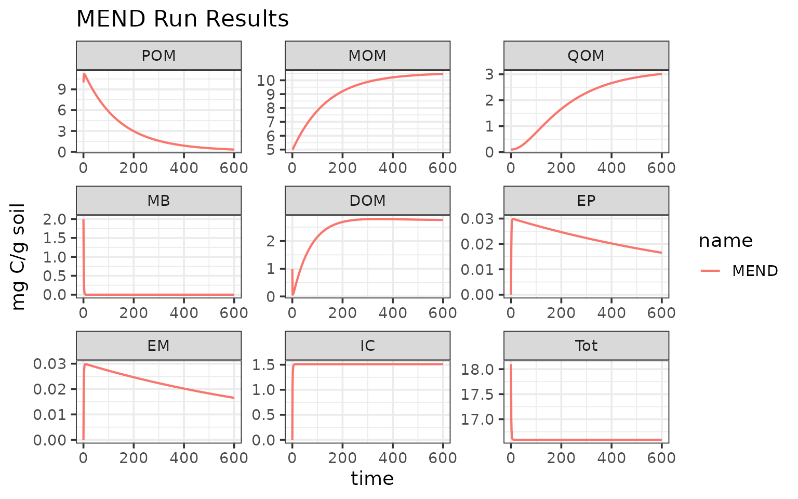
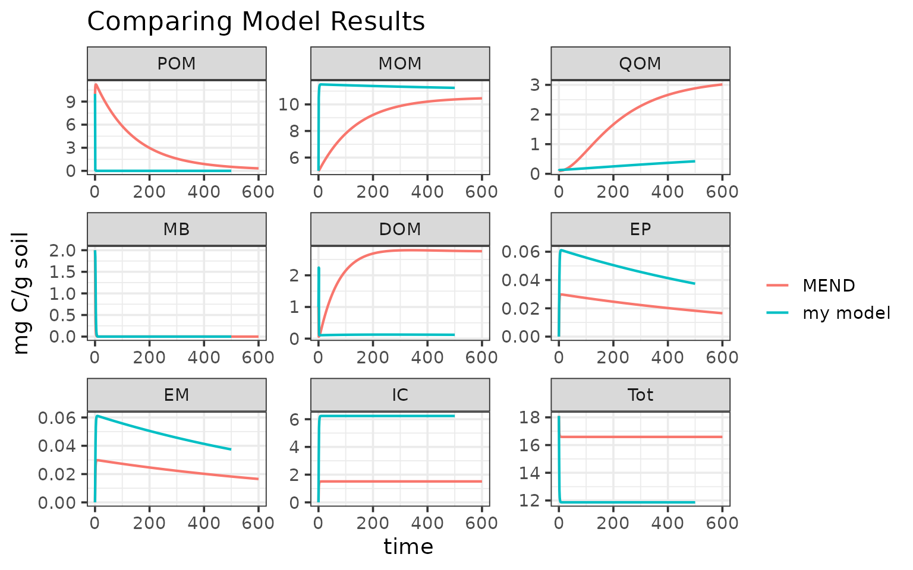

MEMC
MEMC.RmdInstallation
MEMC may be installed using the
install_github function from the remotes
package.
## install the remotes package if needed
remotes::install_github("Microbial-Explicit-Model/MEMC") Example 1: Run MEMC MEND
The package ships with several already defined model configurations,
use help(configurations) to see a list of all the available
configurations that are ready for use. As of V1 there are six model
configurations that are included as internal MEMC package data. These
model configurations use different representations for DOM uptake, POM
decomposition, and MB decay. Take a look at the MEMC model
configurations described in the model_configs table.
print(model_configs)
#> model DOMuptake POMdecomp MBdecay
#> 1 MEND MM MM LM
#> 2 COMISSION MM RMM LM
#> 3 CORPSE RMM LM LM
#> 4 MEMS LM LM LM
#> 5 BAMS MM MM LM
#> 6 MIMCS MM MM DDTake a look at the pre-built MEND_model configuration (see
help("MEND_model") for more details).
# Printing this MEMC model configuration will return a list defining the run name, a table of the flux dynamics, parameter values, and initial SOM pool sizes.
print(MEND_model)
#> $name
#> [1] "MEND"
#>
#> $table
#> model DOMuptake POMdecomp MBdecay
#> 1 MEND MM MM LM
#>
#> $params
#> parameter description
#> 1 V_p maximum specific decomposition rate for POM by EP
#> 2 K_p half-saturation constant for decomposition of POM
#> 3 V_m maximum specific decomposition rate for MOM by EM
#> 4 K_m half-saturation constant for decomposition of MOM
#> 5 V_d maximum specific uptake rate of D for growth of MB
#> 6 K_d half-saturation constant of uptake of D for growth of MB
#> 7 f_d fraction of decomposed P allocated to DOM
#> 8 g_d fraction of dead B allocated to DOM
#> 9 p_ep fraction of mR for production of EP
#> 10 p_em fraction of mR for production of EM
#> 11 r_ep turnover rate of EP
#> 12 r_em turnover rate of EM
#> 13 Q_max maximum DOC sorption capacity
#> 14 K_ads specific adsorption rate
#> 15 K_des desorption rate
#> 16 dd_beta strength of density dependent microbial decay
#> 17 Input_POM POM input
#> 18 Input_DOM DOM input
#> 19 Input_MOM MOM input
#> 20 CUE carbon use efficiency
#> units value
#> 1 mgC mgC^-1 h^-1 14.000
#> 2 mgC / g soil 50.000
#> 3 mgC mgC^-1 h^-1 0.250
#> 4 mg C/g soil 250.000
#> 5 mgC mgC^-1 h^-1 3.000
#> 6 mg C/g soil 0.250
#> 7 <NA> 0.500
#> 8 <NA> 0.500
#> 9 <NA> 0.010
#> 10 <NA> 0.010
#> 11 mgC mgC^-1 h^-1 0.001
#> 12 mgC mgC^-1 h^-1 0.001
#> 13 mgC / g soil 3.400
#> 14 mgC mgC^-1 h^-1 0.006
#> 15 mgC mgC^-1 h^-1 0.001
#> 16 <NA> 1.000
#> 17 mg C 0.000
#> 18 mg C 0.000
#> 19 mg C 0.000
#> 20 0.400
#>
#> $state
#> POM MOM QOM MB DOM EP EM IC
#> 10.00000 5.00000 0.10000 2.00000 1.00000 0.00001 0.00001 0.00000
#> Tot
#> 18.10002Complete a model run using the solve_model function.
Description of inputs solve_model() function are as
follows:
- mod. A
MEMCmodel object, either one of the model configurations included with the package or created using theconfigure_model(). - times. A numeric vector of the time sequence for which the model will be solved for; the first value of times is the initial time.
mend_out <- solve_model(mod = MEND_model, time = 0:600)The model run results are saved in the mend_out data
frame.
# Preview the run results
head(mend_out)
#> time variable value units name
#> 1: 0 POM 10.00000 mg C/g soil MEND
#> 2: 1 POM 10.85536 mg C/g soil MEND
#> 3: 2 POM 11.15375 mg C/g soil MEND
#> 4: 3 POM 11.22363 mg C/g soil MEND
#> 5: 4 POM 11.20608 mg C/g soil MEND
#> 6: 5 POM 11.15458 mg C/g soil MENDVisualize the run results.
ggplot(data = mend_out) +
geom_line(aes(time, value, color = name), linewidth = 0.75) +
facet_wrap("variable", scales = "free") +
labs(y = "mg C/g soil",
title = "MEND Run Results")
Example 2: Build your own model
With MEMC users are able easily run simulations with the
provide model configurations and are able to build toy model of their
own design by selecting any combination of the supported flux dynamics.
See here for an example for how to use configure_model to
build your own SOM model. The MEMC package includes default
parameter and initial pool values that are included as package data that
are based on Wang et al. 20151. This example will use these values. Before
setting up the model configuration take a look at these default
values.
print(default_initial)
#> POM MOM QOM MB DOM EP EM IC
#> 10.00000 5.00000 0.10000 2.00000 1.00000 0.00001 0.00001 0.00000
#> Tot
#> 18.10002
# Alternatively can use the :: to access the MEMC package data.
# print(MEMC::default_initial)
print(default_params)
#> parameter description
#> 1 V_p maximum specific decomposition rate for POM by EP
#> 2 K_p half-saturation constant for decomposition of POM
#> 3 V_m maximum specific decomposition rate for MOM by EM
#> 4 K_m half-saturation constant for decomposition of MOM
#> 5 V_d maximum specific uptake rate of D for growth of MB
#> 6 K_d half-saturation constant of uptake of D for growth of MB
#> 7 f_d fraction of decomposed P allocated to DOM
#> 8 g_d fraction of dead B allocated to DOM
#> 9 p_ep fraction of mR for production of EP
#> 10 p_em fraction of mR for production of EM
#> 11 r_ep turnover rate of EP
#> 12 r_em turnover rate of EM
#> 13 Q_max maximum DOC sorption capacity
#> 14 K_ads specific adsorption rate
#> 15 K_des desorption rate
#> 16 dd_beta strength of density dependent microbial decay
#> 17 Input_POM POM input
#> 18 Input_DOM DOM input
#> 19 Input_MOM MOM input
#> 20 CUE carbon use efficiency
#> units value
#> 1 mgC mgC^-1 h^-1 14.000
#> 2 mgC / g soil 50.000
#> 3 mgC mgC^-1 h^-1 0.250
#> 4 mg C/g soil 250.000
#> 5 mgC mgC^-1 h^-1 3.000
#> 6 mg C/g soil 0.250
#> 7 <NA> 0.500
#> 8 <NA> 0.500
#> 9 <NA> 0.010
#> 10 <NA> 0.010
#> 11 mgC mgC^-1 h^-1 0.001
#> 12 mgC mgC^-1 h^-1 0.001
#> 13 mgC / g soil 3.400
#> 14 mgC mgC^-1 h^-1 0.006
#> 15 mgC mgC^-1 h^-1 0.001
#> 16 <NA> 1.000
#> 17 mg C 0.000
#> 18 mg C 0.000
#> 19 mg C 0.000
#> 20 0.400
# Alternatively can use the :: to access the MEMC package data.
# print(MEMC::default_params)Set up the model configuration.
# Running configure_model will print a table describing the model configuration.
my_model <- configure_model(params = default_params,
state = default_initial,
name = "my model",
DOMuptake = "MM",
POMdecomp = "LM",
MBdecay = "LM")
#> |model |DOMuptake |POMdecomp |MBdecay |
#> |:--------|:---------|:---------|:-------|
#> |my model |MM |LM |LM |Use solve_model to run our model.
my_out <- solve_model(mod = my_model, time = 0:500)
head(my_out)
#> time variable value units name
#> 1: 0 POM 10.000000000 mg C/g soil my model
#> 2: 1 POM 0.078133991 mg C/g soil my model
#> 3: 2 POM 0.057178745 mg C/g soil my model
#> 4: 3 POM 0.025336371 mg C/g soil my model
#> 5: 4 POM 0.010945045 mg C/g soil my model
#> 6: 5 POM 0.004727821 mg C/g soil my modelCompare our toy model results with the MEND model results.

For more examples and tutorials please see our online documentation.